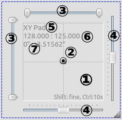
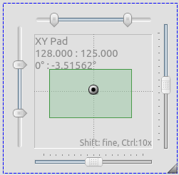

X/Yパッド X/Yパッド
X/Yパッド X/YパッドX/Yパッドは、ビジュアルコンソールのウィジェットで、ヘッドなどの2軸の動きを感覚的に操作できるものです。
2軸の動きのあるフィクスチャー、ミラースキャンなどのPan、Tiltの動きをコントロールするのに向いています。
X/Yパッドでは、動作の上限と下限を設定でき、フィクスチャーを向けたくない場所に向かないように設定ができます。

| (1) リミットスライダー | フィクスチャーの動作に上限と下限を設定できます。7 |
| (2) X/Yパッド名 | XYパッド名はプロパティーで変更できます。 |
| (3) 座標表示とDMX値表示 | 実際にDMXとして出力している値に加えて、フィクスチャーの角度を表示しています。これらは十字キーで動かすことができShiftを押しながら十字キーを操作すると、微調整、Ctrlキーを押しながら十字キーを操作すると速く動かすことができます。 |
| (4) 動作範囲の制限 |
フィクスチャーの定義に動作角の情報がある場合はDMXの出力から推測したフィクスチャーの角度を計算して表示しています。 デフォルトでは角度の0度はDMXの中央に位置しています、デフォルトではDMXの値が(127,127)の時に0度と表示されます。たとえば、Panの動作角が540度と定義されていた場合は、XYパッド上では-270度から270度と表示されます。 ※ これはフィクスチャーの定義から計算した目安の値であり、実際のフィクスチャーの動きとは異なる場合があります、目安程度に考えて実際に動かしてみるほかないです。 |
| (5) スライダー | ドラッグでPan Tiltを動かすことができます。 |
| (6) ハンドル | スライダーだけではなく、XY平面上をドラッグすることでハンドルを移動させることができます。 |
| (7) XY平面 | ハンドルを動かすためのXY平面です。この平面は動作制限(リミット)をかけることができます。 |
| (8) メインエリア | XYウィジェットです。 |
| (9) プリセット | お好みの位置を予めプリセットとして記憶させておき、クリックで呼び出すことができます。 |
XYパッドは基本的にフィクスチャーのPanとTiltをコントロールするウィジェットです。
メインエリアのスクリーンショットです。

フィクスチャーを向けたくない角度もあると思います。
そんな時には、動作制限をつけましょう。
XYパッドでは動作制限の設定方法が２通りあります。
上部と左側のスライダーは動作制限設定用のスライダーです。
これらのスライダーを使いお好みの動作制限を設定してください。動作制限を行うとXY平面上に四角が表示され、視覚的に制限区域がわかりやすくなっています。
※ 動作制限を行なった際、XYパッドの動作を外部入力にしている場合は、動作制限され小さくなった範囲を256等分して、より細かい外部入力を受け付けるようになります。
ウィジェットのプロパティーからフィクチャーごとの動作制限を設定できます。詳しくは後述の各種設定をご覧ください。この方法で動作制限を行なった場合は、XY平面上に四角が表示され視覚的にわかりやすく表示されることはありません。
この方法は、複数台のフィクスチャーが別々のところに設置され、一様に動作制限を行えない場合に、フィクスチャーごとに制限を行えるので便利です。
例えば、動作角540度のフィクスチャーでも360度の動作角のフィクスチャーであるかのように扱えます。
(例) フィクスチャーX軸（Pan）の最小値を20％（DMX値51）、最大値を80％（DMX値204）に設定します。ハンドルが左端（値0）にあるとき、実際のDMX出力は51です。同様に、右端のハンドルは204（= 80％）を出力します。その間の値の場合、DMX出力は比例してスケーリングされます。
両方のリミットを有効にすることができます（レンジスライダとフィクスチャごとのリミットを使用）。
XYパッドは３つの機能がまとまっているウィジェットです。これらの機能をどう使うかはあなた次第です。
 EFXを作成し、バーチャルコンソール上に配置したい場合に便利な使い方です。 XYウィジェットのプロパティーからEFXをプリセットに登録することでこの使い方ができます。設定するとウィジェット上にEFXを再生するためのボタンが表示され、本番モードでクリックすると再生されます。
EFXを作成し、バーチャルコンソール上に配置したい場合に便利な使い方です。 XYウィジェットのプロパティーからEFXをプリセットに登録することでこの使い方ができます。設定するとウィジェット上にEFXを再生するためのボタンが表示され、本番モードでクリックすると再生されます。
キーボードの十字キーでハンドルを動かすこともできます。Shiftを押しながら十字キーを操作すると細かな微調整が可能です。また、Ctrlを押しながらだと大まかに早くハンドルを移動することができます。
| Key | 機能 | 動作幅 |
| Shift + 十字キー | 微調整 | 1 |
| Ctrl + 十字キー | 大まか | 10 |
| Shift + Ctrl + 十字キー | 大まか | 10 |
XYウィジェットのプロパティー を表示するには、右クリックのほかダブルクリックでも変更できます。
を表示するには、右クリックのほかダブルクリックでも変更できます。
全般タブでは、XYウィジェットの基本的な設定を変更できます。
※ Touch OSCを外部入力にする時には、自動判別から設定しないとPan,Tiltが入れ替わって設定されてしまいます。
| XYパッドの名前 | XYパッドに名前をつけることができます。設定した名前はXY平面の左上に表示されます。 |
| Y軸の上下 |
Y軸の動きを反転できます、フィクスチャーを吊り込んだ時など、設置状況に応じて設定してみてください。 |
| パン/X軸 | 外部入力でPanをコントロールすることができます。 EFXプリセットの再生をしているときに外部入力を行うとX座標を調整する役目を持ちます。 |
| チルト/Y軸 | 外部入力でTiltをコントロールすることができます。 EFXプリセットの再生をしているときに外部入力を行うとX座標を調整する役目を持ちます。 |
| 幅 | 外部入力で動作制限の幅をコントロールすることができます。 ここで設定した動作制限は2-EFXのために使っているときのみ作用します。 |
| 高さ | 外部入力で動作制限の高さをコントロールすることができます。 ここで設定した動作制限は2-EFXのために使っているときのみ作用します。 |
ここでは、１の使用法の時に操作するフィクスチャーを指定するための設定項目です。
| フィクスチャー一覧 |
XYパッドで操作するフィクスチャーを一覧で表示しています。
|

|
フィクスチャーダイアルログを表示してフィクスチャーを追加します。 ※ PanとTiltが定義されているフィクスチャーのみがリストに表示されています。 |

|
フィクスチャーを削除します。 |
|
|
選択したフィクスチャーの動作制限を設定します。 |
2.1 フィクスチャーの動作制限について
XYパッドでは状況に応じてフィクスチャーの動作制限を行えます。
| 水平/X軸 |
|
| 垂直/Y軸 |
|
XYウィジェット上にプリセットボタンを表示することができます。表示させたボタンはソロフレーム内と同様に排他的に動作します。
| Presets list | プリセットの一覧です。 |
| Add position |
下に表示されているXY平面のハンドルを動かして、お好みの位置に調整した後、このアイコンをクリックして、新しいプリセットを追加してください。 作成したプリセット名はデフォルトで座標を名前にして登録されます。 |
| Add EFX |
クリックするとファンクション選択画面が表示され作成済みのEFXを選択できます。 OKをクリックすると左の一覧に追加されます。 デフォルトでは、EFX名がそのまま一覧に表示されます。 |
 Add Scene Add Scene |
クリックするとファンクション選択画面が表示され作成済みのシーンを選択できます。 OKをクリックすると左の一覧に追加されます。 デフォルトでは、シーン名がそのまま一覧に表示されます。 ※ 選択したシーンにPan,Tiltのいずれかのチャンネルの操作が含まれていない場合は追加しようとするとエラーが表示されます。 |
 Add Fixture Group Add Fixture Group |
フィクスチャー選択画面が表示されます、グループとして登録したい複数のフィクスチャーを選択し、OKをクリックすると機器グループが作成されます。 機器グループを設定すると、XYウィジェット上に機器グループボタンが表示され、XYウィジェットで捜査対象とするフィクスチャーを本番モード中に変更することができます。 ※ フィクスチャーグループはEFXやシーン再生時には影響せず、XY平面の操作のみ影響します。 |
| 削除 |
プリセットを削除します。 |
| Preset name | 一覧、ボタンに表示されるプリセット名を変更できます。 |
| 外部入力 | 現在選択されているプリセットの再生を外部入力でコントロールすることができます。 |
| キーボードショートカット | 現在選択されているプリセットの再生をキーボードショートカットでコントロールすることができます。 |